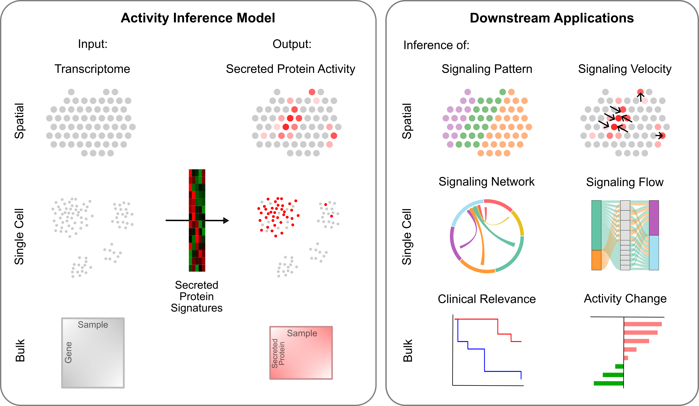

SecAct is an R package designed for inferring the intercellular signaling activity of secreted proteins from gene expression profiles. Users can input multiple modalities of expression data, including spatial, single-cell, or bulk transcriptomics data. The outputs are the inferred signaling activities of >1,000 secreted proteins for each spatial spot, individual cell, or sample, depending on the input data type. Based on the inferred activities, SecAct provides multiple downstream application modules. For spatial data, SecAct can infer the signaling pattern and signaling velocity for secreted proteins. For single-cell data, SecAct can infer the intercellular communication network and signaling flow from source cells to receiver cells. For bulk data, SecAct can infer secreted protein risk scores for a large cohort linked to clinical data, and can infer secreted protein activities that are differentially regulated between two phenotypes. These functionalities and terms are explained more formally in the following tutorials.

Installation
To install SecAct R package, we recommend using devtools:
# install.packages("devtools")
devtools::install_github("data2intelligence/SecAct")Or user can install SecAct R package from the source code. Click here to download it.
# install SecAct dependencies
remotes::install_deps("Path_to_the_source_code", force = TRUE)
# install SecAct R package
install.packages("Path_to_the_source_code", repos = NULL, type="source")🟥 Optional accelerator
After installing the SecAct R package, you can complete all analyses in the tutorial sections. Note that the activity inference functions (SecAct.activity.inference and its *.ST and *.scRNAseq variants) rely on ridge regression and permutation in R language, and may run relatively slowly. If you would like to speed up these functions, please visit here to install the accelerator R package additionally.
🟪 Alternative installation options
If you are not familiar with R, you can use the Python version of SecAct available here.
If you prefer not to install SecAct locally, a Docker image is available for both the R and Python versions:
- An online server is also available here. Please note that it currently supports the basic activity inference function only and is limited to datasets with fewer than 10 samples.
Dependencies
- R version >= 4.2.0.
- R packages: Matrix, ggplot2, reshape2, patchwork, NMF, akima, gganimate, metap, circlize, ComplexHeatmap, ggalluvial, networkD3, survival, survminer.
Example
library(SecAct)
dataPath <- file.path(system.file(package = "SecAct"), "extdata/")
expr.diff <- read.table(paste0(dataPath, "Ly86-Fc_vs_Vehicle_logFC.txt"))
# infer activity; ~2 mins
res <- SecAct.activity.inference(inputProfile=expr.diff, is.differential=TRUE)
head(res$zscore)Tutorial
SecAct is applicable to multiple modalities of gene expression profiles, including spatial, single-cell, and bulk transcriptomics data. The following tutorials demonstrate its applications across each data type.
Contact
For questions, bug reports, or feature requests, please submit an issue. To keep the issue tracker focused and constructive, advertising or promotional content is not permitted.
Citation
Beibei Ru, Lanqi Gong, Emily Yang, Seongyong Park, George Zaki, Kenneth Aldape, Lalage Wakefield, Peng Jiang. Inference of secreted protein activities in intercellular communication. Nature Methods, 2026. [Full Text]